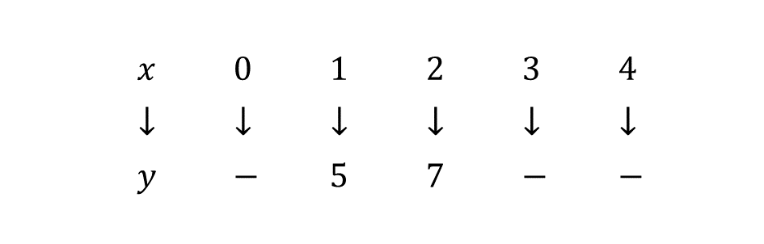
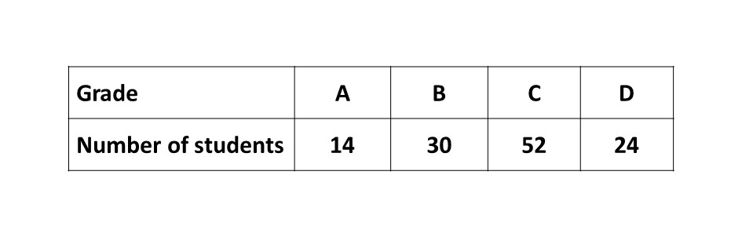

BECE
Year to Practice:
1990
1991
1992
1993
1994
1995
1996
1997
1998
1999
2000
2001
2002A
2002B
2003
2004
2005
2006
2007
2008
2009
2010
2011
2012
2013
2014
2015
2016
2017
2018
2019
2020
2021
2022
2023
2024
PAST QUESTIONS 2006
Time yourself to improve on your speed. You are to use not more than 60 minutes for this section.
Click on the link below when your are ready.
Kindly contact the administrator of the site on WhatsApp or Phone (0208711375) for the link to the test.
Try the questions first, using not more than 15 minutes for each question, and watch the accompanying videos to see how the questions are solved.
Question 1
\(a)\) A trader sold 250 articles for ₵525,000.00 at a profit of 25%.
\(\hspace{0.5cm} i)\) Calculate the cost price of each article.
\(\hspace{0.5cm} ii)\) If the trader had wanted 45% profit on the cost price, how much should he have sold each of the articles?
\(b)\) Find the simple interest on ₵880,000.00 for \(2\frac{1}{2}\) years at \(3\frac{1}{4}\%\) per annum.
Question 2
\(a)\) The ratio of men to women in a village is \(12:25\). If there are 120 men,
\(\hspace{0.5cm} i)\) How many women are there?
\(\hspace{0.5cm} ii)\) What is the total number of men and women?
\(b)\) A bag contains 70 pencils out of which 15 are green and 30 blue.
\(\hspace{0.5cm} i)\) How many pencils of other colours are in the bag?
\(\hspace{0.5cm} ii)\) A pencil is selected from the bag at random. What is the probability that it is blue?
\(c)\) Solve \(\frac{1}{3}(x - 1) - \frac{1}{2}(x - 3) \leq 1\frac{1}{4}\) and illustrate your answer on the number line.
Question 3
\(a)\) \(i)\) Using a pair of compasses and a ruler only, construct triangle \(XYZ\) with \(XZ = 12\) cm, \(XY = 10\) cm and angle \(XYZ = 90^\circ\).
\(\hspace{0.5cm} ii)\) Measure \(YZ\).
\(\hspace{0.5cm} iii)\) Calculate the area of triangle \(XYZ\)
\(\hspace{0.5cm} iv)\) Measure angle \(ZXY\).
\(b)\) An isosceles triangle has a perimeter of \((9y - 15)\) cm. What is the length of each of the two equal sides, if its third side is \((3y - 7)\) cm?
Question 4
The mapping below has the rule, \(y = 2x + 3\).
\(a)\) \(i)\) Copy the mapping and fill in the missing numbers.
\(\hspace{0.5cm} ii)\) Using a scale of 2 cm to 1 unit on both axes on a graph sheet, choose the origin \(O\) and draw the perpendicular axes \(Ox\) and \(Oy\)
\(\hspace{0.5cm} iii)\) On the same graph sheet, mark the \(x-\)axis from \(0\) to \(5\) and the \(y-\)axis from \(0\) to \(12\).
\(\hspace{0.5cm} iv)\) Plot on the graph sheet the ordered pairs \((x, y)\) from the mapping and join all the points using a straight edge.
\(b)\) From your graph, find:
\(\hspace{0.5cm} i)\) \(y\) when \(x = 3.5\);
\(\hspace{0.5cm} ii)\) \(x\) when \(y = 8\)
\(\hspace{0.5cm} iii)\) the gradient of the line \(y = 2x + 3\)
Question 5
\(a)\) A man spent \(\frac{1}{4}\) of his monthly salary on rent, \(\frac{2}{5}\) on food and \(\frac{1}{6}\) on books. If he still had ₵55,000 left, what was his monthly salary?
\(b)\) The average age of a family of eight is 30 years. The average age of the six children in the family is 19 years. If the mother is four younger than the father, calculate the age of the father.
Question 6
\(a)\) The following table shows the distribution of grades obtained by 120 students in an examination.
Draw a pie chart for the distribution.
\(b)\) \(i)\) Evaluate: \(5\frac{7}{15} - 2\frac{2}{3} + 1\frac{5}{12}\)
\(\hspace{0.5cm} i)\) Factorise \(xy - xz + 5y - 5z\)
To advertise on our website kindly call on 0208711375 or 0249969740.